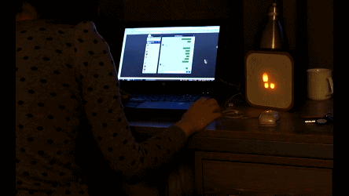
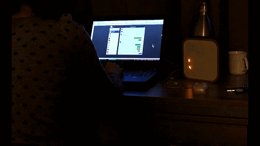
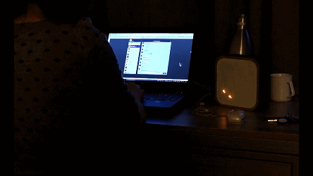
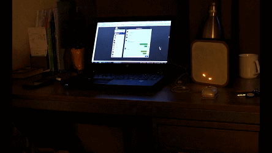
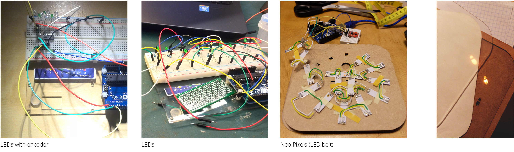
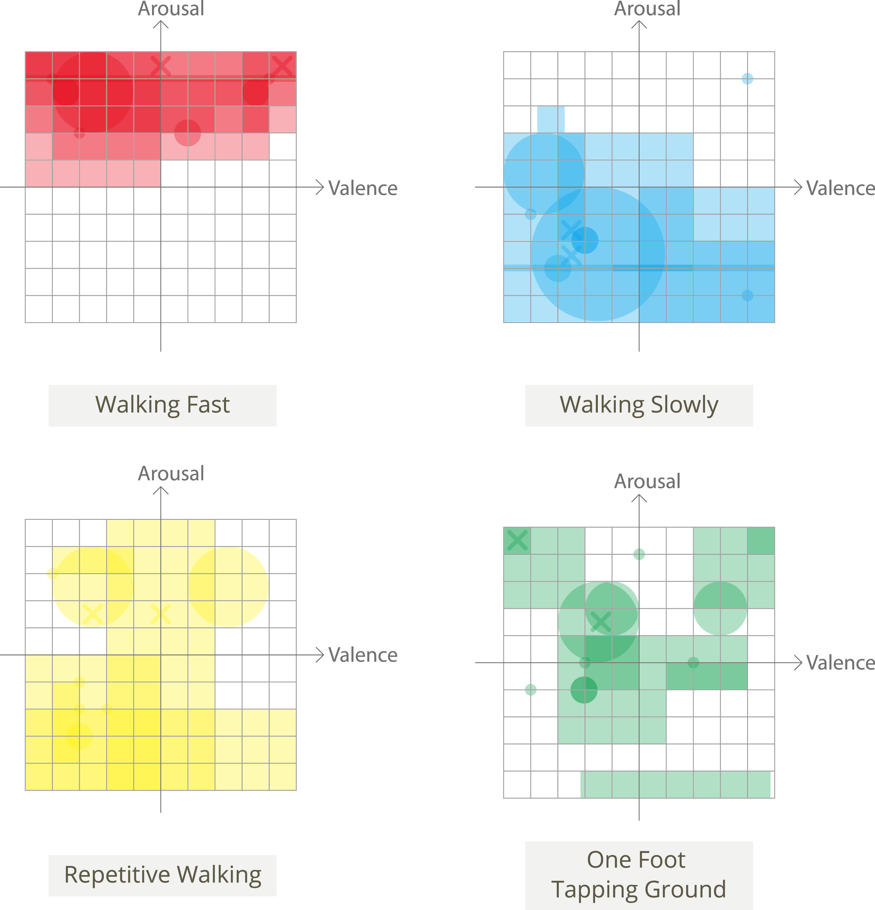

Stay with You
Design research on communication enhancement gadget
Type
Independent student project
Duration
09.2014 - 01.2015
Scope
Research through Design / User Research / Product Design
Brief
In this design research project, I defined the research title as "How to enrich the experience of digital communication for better understanding?", and the aim is to study weather moving footprint patterns can be used for emotion expression in digital communications. Research through design is an approach that employing design itself to acquire new knowledge or test hypothesis. In addition to the research essence of this project, this is an intriguing tangible product design for me as well.
Concept
Talking with someone through instant messaging system with friends and families can be misunderstanding sometimes due to the lack of non-verbal symbols. Stay with you is a gadget that can be used to express one's states of emotion during a digital conversation with close friends and families. Moving footprint patterns represent multiple combinations of different levels of emotional arousal and valence, which indicates moods like happy, fear, anger, etc.
I intended to enrich the online chatting experience with integration of real-life interaction and reaction. The body language of feet, is a distinctive point of view to pry into people's emotional situation.
(Video link for mainland China: Stay with You)
One foot tapping ground
Repetitive walking
Walking fast
Walking slowly
Design Research Process
This project went through a comprehensive research procedure. Research question was proposed and refined iteratively in the process of exploration, desk research and user interviews. The contact with users inspired the design, which was then built into a prototype. The prototype served as an means of research in the evaluation phase.
Key Steps
User Interview
Organize users' response in the interviews through affinity diagrams. Formulate research questions and design inspiration based on the results.

Prototyping
LEDs, LEDs with encoders, and Neo-pixels: how circuits were simplified and improved. Use two layers to create soft edges for lights coming out of MDF cutting edges.

Quantatitive analysis
Participants were first asked to read mood induction text material and choose a pattern to describe it. Reversely, they also needed to map these four patterns on the Circumplex Model of Emotion. The expressivity of footprint patterns and envisioned experience of using such a device were two purpose of the evaluation.
Circumplex Emotion Model matching with four footprint patterns.
Matching mood induction material (pre-categorized by four basic emotions) with four footprint patterns.


© Lezhi Su 2017